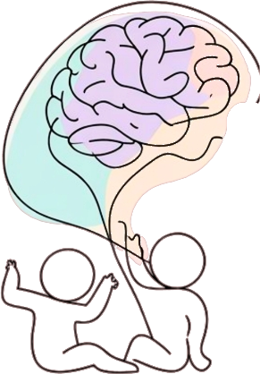
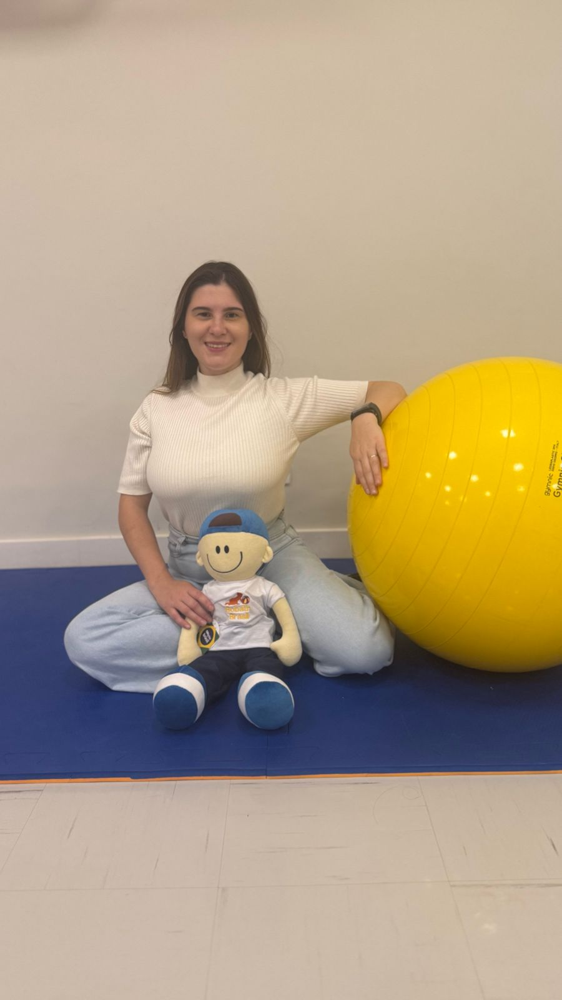
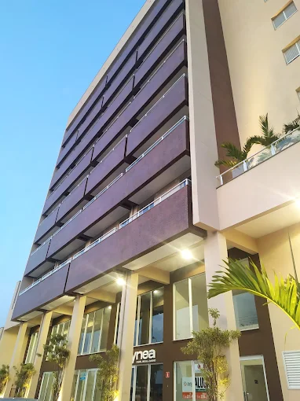

Neuroreabilitação infantil
Estímulo ao desenvolvimento neuromotor de crianças com alterações neurológicas, utilizando o Conceito Neuroevolutivo Bobath para promover movimento funcional, postura e independência.
Fisioterapia pediátrica · Conceito Neuroevolutivo Bobath
Acompanho o desenvolvimento motor, respiratório e neurológico de crianças com um olhar individual — respeitando a fase, a história e o ritmo de cada uma. Atendimento pediátrico especializado em neuroreabilitação, fisioterapia respiratória e atraso do desenvolvimento motor.


Dra. Giovanna LuvizottoSobre
Fisioterapeuta especializada em fisioterapia pediátrica, com formação em Conceito Neuroevolutivo Bobath — abordagem terapêutica voltada à reabilitação neurológica, centrada na criança e na família, usada para favorecer padrões de movimento mais funcionais e independentes.
Também possui formação em ABA — Análise do Comportamento Aplicada, abordagem baseada em evidências utilizada para apoiar o desenvolvimento de habilidades e comportamentos funcionais em crianças.
Atua com crianças em diferentes fases do desenvolvimento, com foco especial em neuroreabilitação infantil, fisioterapia respiratória, atraso do desenvolvimento motor e torcicolo congênito e assimetria craniana, sempre com um plano terapêutico construído junto à família.
Atende na Clínica GESTUS, em Cerquilho – SP.
CREFITO 3/396938-F
Áreas de atuação
Estímulo ao desenvolvimento neuromotor de crianças com alterações neurológicas, utilizando o Conceito Neuroevolutivo Bobath para promover movimento funcional, postura e independência.
Higiene brônquica, fortalecimento da musculatura respiratória e suporte a crianças com quadros respiratórios recorrentes, sempre de forma lúdica e adequada à idade.
Estímulo às etapas motoras — sustentar a cabeça, rolar, sentar, engatinhar e andar — respeitando o tempo de cada criança, com metas claras para a família acompanhar a evolução.
Avaliação e tratamento de torcicolo muscular congênito e plagiocefalia (achatamento craniano), com alongamento cervical, fortalecimento simétrico e orientações práticas para os pais no dia a dia.
Os métodos
O Conceito Neuroevolutivo Bobath é uma abordagem de resolução de problemas para avaliação e tratamento de crianças e adultos com distúrbios neurológicos. Está presente na formação da Dra. Giovanna e orienta a forma como cada sessão é conduzida.
Na prática, isso significa observar como a criança se move, identificar o que dificulta esse movimento e trabalhar junto com ela — e com a família — para construir padrões mais funcionais, no ritmo que faz sentido para cada caso.
A Dra. Giovanna também tem formação em ABA — Análise do Comportamento Aplicada, abordagem baseada em evidências que auxilia no desenvolvimento de habilidades e comportamentos funcionais, somando-se ao trabalho motor e neurológico conduzido nas sessões.
Escuta da família, observação clínica e entendimento da fase de desenvolvimento da criança.
Objetivos definidos com base nas necessidades motoras, respiratórias e neurológicas específicas.
Atendimento lúdico e individualizado, com orientações práticas para o dia a dia em casa.
Reavaliações periódicas para ajustar o plano conforme a criança avança em seu próprio tempo.
Para quem é
Cada criança se desenvolve de um jeito. Se algo abaixo soa familiar, uma avaliação pode trazer clareza e um plano de acompanhamento.
Atraso nos marcos motores esperados para a idade
Alterações no tônus muscular ou na postura
Dificuldades respiratórias frequentes
Diagnóstico neurológico com indicação de reabilitação
Orientação médica para acompanhamento fisioterapêutico
Preferência por virar a cabeça sempre para o mesmo lado, pescoço mais rígido ou assimetria no formato do crânio do bebê
Vontade de entender melhor a fase atual do desenvolvimento
Onde atendo
Edifício Monte Líbano
Av. Francisco Gaioto, 136 — Sl 01, Centro
Cerquilho – SP, 18520-137

Edifício Monte LíbanoContato
Fale por WhatsApp para tirar dúvidas ou agendar uma avaliação. Também estou no Instagram, com conteúdos sobre desenvolvimento infantil e fisioterapia pediátrica.